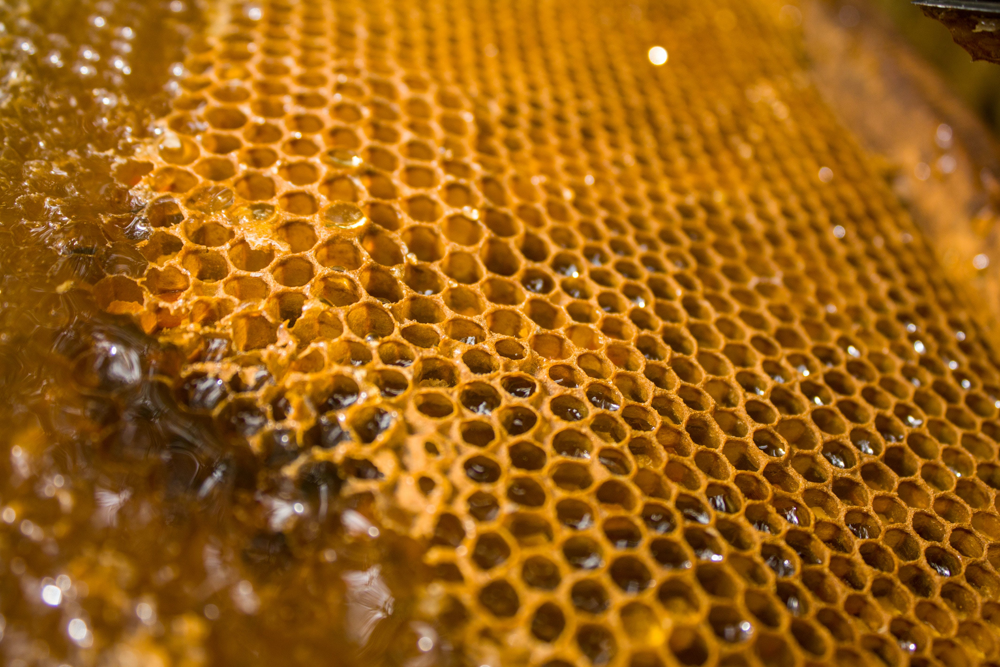
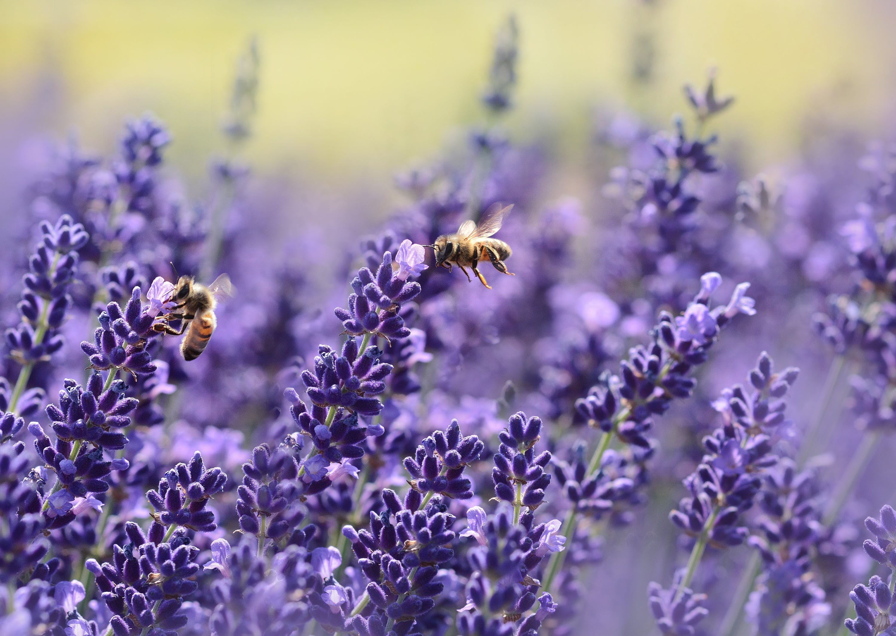
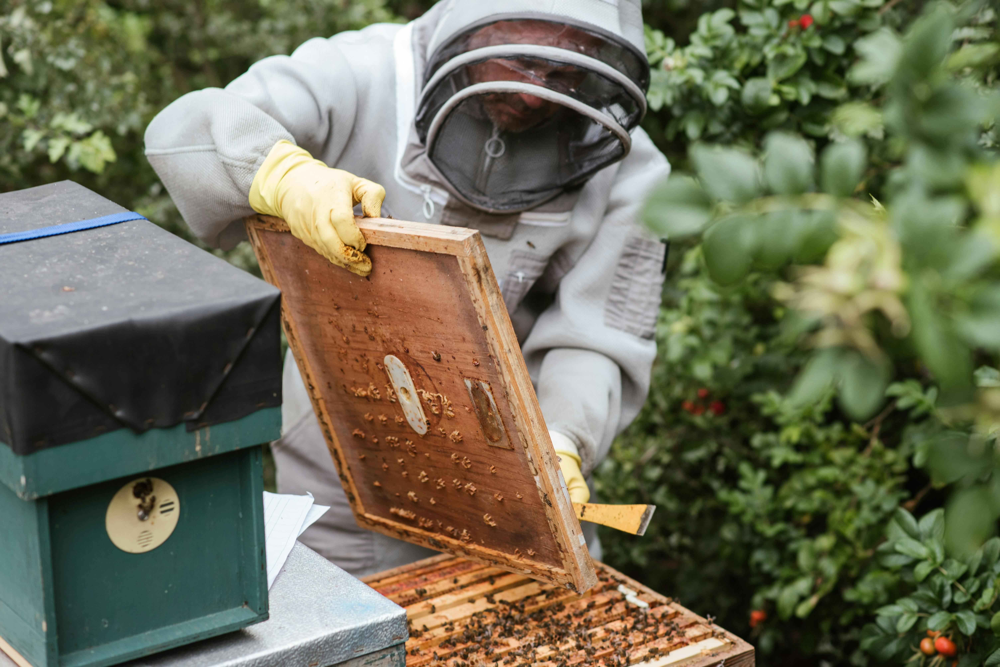

Upcoming Beekeeping Courses
Beginner courses run for six weeks on Saturdays from 12pm to 3pm. No previous experience is required and all equipment is provided.
Our Beginner courses are structured as follows:
- Introduction to Beekeeping
- Basic Bee Biology
- Setting Up a Hive
- Beekeeping Equipment
- Beekeeping Regulations and Safety
- Beehive Management
- Seasonal Hive Management
- Harvesting Honey
- Pest and Disease Management
- Environmental Considerations
- Hands-On Practical Sessions
- Beginner Course - Six Weeks
- Start Date: Saturday 21st October 2023
- €85
- Sold Out
- Beginner Course - Six Weeks
- Start Date: Saturday 20th January 2024
- €85
- Places Available
- Beginner Course - Six Weeks
- Start Date: Saturday 2nd March 2024
- €85
- Places Available
Intermediate courses run for eight weeks in the summer months beginning in May and ending in September. You must have previously attended our beginners course or provide evidence of your beekeeping experience with your own hives. All equipment is provided.
Our Intermediate courses are structured as follows:
- Advanced Hive Management
- Queen Rearing
- Swarm Management
- Integrated Pest Management (IPM)
- Hive Products and Value-Added Products
- Pollination Services
- Queen Genetics
- Seasonal Challenges and Solutions
- Technology in Beekeeping
- Community Outreach and Education
- Advanced Environmental Stewardship
- Hands-On Workshops and Demonstrations
- Case Studies and Problem-Solving
- Intermediate Course - Ten Weeks
- Start Date: Saturday 4th May 2024
- €175
- Sold Out
- Intermediate Course - Ten Weeks
- Start Date: Saturday 13th July 2024
- €175
- Places Available
Why Become a Beekeeper?
Becoming a beekeeper can be a rewarding and fascinating endeavor. Here are some compelling reasons to consider taking up beekeeping:
1. Connection with Nature
Beekeeping encourages a close connection with the natural world. It requires attentiveness to the needs of your bees, an understanding of seasonal changes, and an appreciation for the delicate balance of ecosystems. It can be a meditative and grounding experience.

2. Honey Production
One of the most obvious benefits of beekeeping is the production of honey. Harvesting your own honey is not only a delicious reward for your efforts but can also be a source of potential income or a unique gift for friends and family.
3. Positive Environmental Impact
Bees play a crucial role in pollination, contributing to the growth of fruits, vegetables, and flowers. By becoming a beekeeper, you actively participate in supporting local ecosystems. Healthy bee populations are essential for biodiversity and food production.
4. Relaxation and Stress Relief
Many beekeepers find the process of working with bees to be therapeutic. The rhythmic hum of the hive, the focused attention required, and the overall pace of beekeeping can be a great way to unwind and reduce stress.
But...
Remember that beekeeping does require time, effort, and a commitment to learning. It's important to educate yourself about bee behavior, hive management, and potential challenges; however, for those who are passionate about nature, sustainability, and learning, beekeeping can be an incredibly fulfilling and enjoyable pursuit.